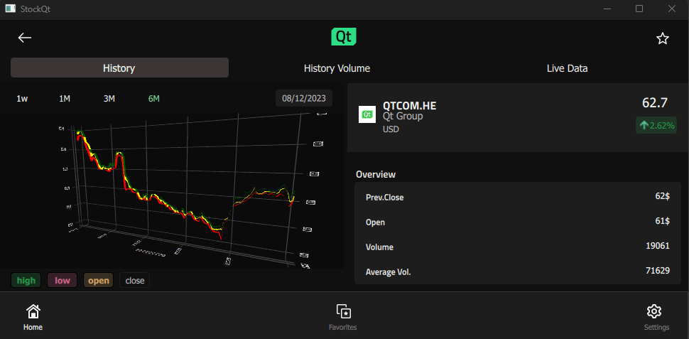

StocQt
A configurable stock chart for 100 stocks.

The StocQt application presents trend charts for a custom list of 100 stocks based on the NASDAQ-100. It allows the user to choose stocks from a list, and fetch the required data from the Financial Modeling Prep API using QNetworkAccessManager or from an offline dataset. The application also allows for favoriting up to 5 stocks for use in comparison charts.
The application uses several custom types such as Search, StockCheckBox, StockChart, StockView, and SettingsView. These types present the stock data in a readable form and let the user customize the trend chart. For example, the user can choose to view the weekly, monthly, quarterly, or half-yearly trends in the stock price.
The application uses a custom StockEngine singleton implemented in C++ for data handling, such as API requests and favoriting stocks. It implements a custom APIHandler class for fetching the online data.
void ApiHandler::stockHistory(const QString &symbol, std::function<void(QList<HistoryData>)> onComplete) { if (m_useLiveData) { QDateTime sixMonthsAgo = QDateTime::currentDateTimeUtc().addMonths(-6); QString to = QDateTime::currentDateTimeUtc().toString(m_dateFormat); QString from = sixMonthsAgo.toString(m_dateFormat); QString url = QString("https://financialmodelingprep.com/api/v3/historical-price-full/" "%1?from=%2&to=%3&apikey=%4") .arg(symbol, from, to, m_apiKey); m_getRequest.setUrl(QUrl(url)); QNetworkReply *reply = m_accessManager.get(m_getRequest); connect(reply, &QNetworkReply::finished, [reply, this, onComplete]() { QString replyStr = QString(reply->readAll()); if (reply->error() != QNetworkReply::NoError) { qDebug() << "Network error" << reply->errorString() << reply->readAll(); } QByteArray data = replyStr.toUtf8(); QList<HistoryData> dataList = parseHistory(&data); onComplete(dataList); reply->deleteLater();
The application uses the ObjectModel type to access visual data models that it depends on.
id: mainWindow
...
ListView {
id: root
...
model: ObjectModel {
Item {
id: stockContainer
width: root.width
height: root.height
StockView {
id: stockView
anchors.fill: parent
visible: false
width: root.width
height: root.height
}
StockListView {
id: listView
visible: true
anchors.fill: parent
width: root.width
height: root.height
}
}
FavoriteView {
id: favoriteView
width: root.width
height: root.height
}
SettingsView {
id: infoView
width: root.width
height: root.height
}
}
}
The StockListModel is a custom data model listing the stocks with basic information such as stock ID, name, value, and favorite. This application uses this data model when the user wants to choose another stock from the list.
StockView and FavoriteView are complex data models that present a trend chart for the selected stock or a group of up to 5 stocks. They use another custom type, StockChart or FavoriteChart, which loads the data from the StockEngine into ListModels and presents the graphical trend of the stock price using a Surface3D, Bars3D, or Scatter3D.
Rectangle { id: chart ... function updateHistory(){ updateStartDate() var startPoint = StockEngine.stockModel.indexOf(startDate) var totalPoints = StockEngine.stockModel.historyCount() var width = startPoint / 50 for (var i = 0; i < totalPoints; i++) { var epochInDays = StockEngine.stockModel.historyDate(i, false) / 86400 appendSurfacePoint(openModel, width, epochInDays, StockEngine.stockModel.openPrice(i)) appendSurfacePoint(closeModel,width, epochInDays, StockEngine.stockModel.closePrice(i)) appendSurfacePoint(highModel,width, epochInDays, StockEngine.stockModel.highPrice(i)) appendSurfacePoint(lowModel,width, epochInDays, StockEngine.stockModel.lowPrice(i)) } ... Surface3D { id: historyGraph ... Surface3DSeries { id: highSeries visible: true baseColor: "green" flatShadingEnabled: true drawMode: Surface3DSeries.DrawSurface itemLabelFormat: "Time: @xLabel High:@yLabel$" ItemModelSurfaceDataProxy { itemModel: highModel rowRole: "row" columnRole: "column" yPosRole: "value" } },
The SettingsView presents information on the application as well as a dropdown menu for choosing between offline and live data. Using live data also requires the user to provide an API key.
Rectangle { id: rectangle ... function handleKey(keyValid) { if (keyValid) { invalidText.visible = false confirmation.visible = false StockEngine.setUseLiveData(true) }
To understand the application better, browse through its code using Qt Creator.
Running the Example
To run the example from Qt Creator, open the Welcome mode and select the example from Examples. For more information, visit Building and Running an Example.
See also QML Applications.